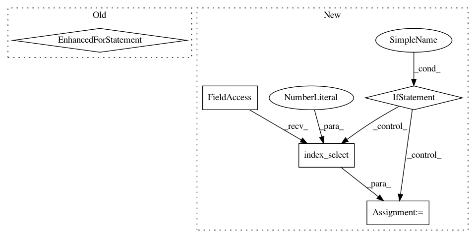

e73fddf45377e8a3c0ea2e8281fae18f7b498dd6,tests/utils.py,TestIncrementalDecoder,forward,#TestIncrementalDecoder#Any#Any#Any#,99
Before Change
// define output in terms of raw probs
probs = torch.FloatTensor(bbsz, len(steps), vocab).zero_()
for i, step in enumerate(steps):
// args.beam_probs gives the probability for every vocab element,
// starting with eos, then unknown, and then the rest of the vocab
if step < len(self.args.beam_probs):
probs[:, i, self.dictionary.eos():] = self.args.beam_probs[step]
else:
probs[:, i, self.dictionary.eos()] = 1.0
// random attention
attn = torch.rand(bbsz, src_len, tgt_len)
return Variable(probs), Variable(attn)
After Change
steps = list(range(tgt_len))
// define output in terms of raw probs
if hasattr(self.args, "probs"):
assert self.args.probs.dim() == 3, \
"expected probs to have size bsz*steps*vocab"
probs = self.args.probs.index_select(1, torch.LongTensor(steps))
else:
probs = torch.FloatTensor(bbsz, len(steps), vocab).zero_()
for i, step in enumerate(steps):
// args.beam_probs gives the probability for every vocab element,
// starting with eos, then unknown, and then the rest of the vocab
if step < len(self.args.beam_probs):
probs[:, i, self.dictionary.eos():] = self.args.beam_probs[step]
else:
probs[:, i, self.dictionary.eos()] = 1.0
// random attention
attn = torch.rand(bbsz, src_len, tgt_len)
return Variable(probs), Variable(attn)
In pattern: SUPERPATTERN
Frequency: 4
Non-data size: 5
Instances
Project Name: elbayadm/attn2d
Commit Name: e73fddf45377e8a3c0ea2e8281fae18f7b498dd6
Time: 2018-03-05
Author: myleott@fb.com
File Name: tests/utils.py
Class Name: TestIncrementalDecoder
Method Name: forward
Project Name: pytorch/fairseq
Commit Name: 6e4b7e22eeb79f7e1c39d862f10ec3e61e51c979
Time: 2017-11-08
Author: myleott@fb.com
File Name: fairseq/models/fconv.py
Class Name: Decoder
Method Name: reorder_incremental_state